CODING AGENTS AS PIXEL WORLD MODELS
traex/DeepSeek-V4.1-Flash · 0143
点击播放 · 原生 RGB 像素
逐轮保存的候选
回放视频、检查图与代码变化。
每份候选均可单独播放。实际图片检查记录在下方工具轨迹中。
候选 01播放与检查图
点击播放 · 原生 RGB 像素

展开代码变化
--- 上一保存版本
+++ 本次保存版本
@@ -0,0 +1,247 @@
+from pathlib import Path
+
+import cv2
+import numpy as np
+from PIL import Image
+
+import artifact_io
+
+
+CASE_DIR = Path(__file__).resolve().parent
+WIDTH, HEIGHT, FRAME_COUNT, FPS = 256, 144, 20, 4
+WATER_Y = 88.0
+
+
+def smoothstep(x):
+ x = np.clip(x, 0.0, 1.0)
+ return x * x * (3.0 - 2.0 * x)
+
+
+def polygon_mask(points, feather=0.8):
+ mask = np.zeros((HEIGHT, WIDTH), dtype=np.uint8)
+ cv2.fillPoly(mask, [np.asarray(points, dtype=np.int32)], 255)
+ if feather:
+ mask = cv2.GaussianBlur(mask, (3, 3), feather)
+ return mask.astype(np.float32) / 255.0
+
+
+def remove_foreground(source):
+ """Make a clean photographic plate behind the potato and grabber."""
+ base = source.copy()
+ potato = polygon_mask(
+ [
+ (140, 21), (146, 22), (150, 27), (152, 36), (151, 46),
+ (152, 55), (149, 62), (146, 68), (142, 71), (138, 70),
+ (134, 65), (132, 57), (132, 48), (131, 39), (133, 29),
+ (136, 23),
+ ],
+ feather=0.0,
+ )
+ potato = (potato > 0.5).astype(np.uint8) * 255
+ potato = cv2.dilate(potato, np.ones((3, 3), np.uint8), iterations=1)
+
+ grabber = np.zeros_like(potato)
+ roi = source[0:15, 120:164]
+ blue = (
+ (roi[:, :, 2].astype(np.int16) > roi[:, :, 0].astype(np.int16) + 18)
+ & (roi[:, :, 2].astype(np.int16) > roi[:, :, 1].astype(np.int16) + 5)
+ & (roi[:, :, 2] > 35)
+ ).astype(np.uint8) * 255
+ grabber[0:15, 120:164] = blue
+ grabber = cv2.dilate(grabber, np.ones((3, 3), np.uint8), iterations=1)
+
+ removal = cv2.bitwise_or(potato, grabber)
+ return cv2.inpaint(base, removal, 3, cv2.INPAINT_TELEA)
+
+
+def make_potato_sprite(source):
+ """Extract the photographed potato with a feathered alpha edge."""
+ points = np.array(
+ [
+ (140, 21), (146, 22), (150, 27), (152, 36), (151, 46),
+ (152, 55), (149, 62), (146, 68), (142, 71), (138, 70),
+ (134, 65), (132, 57), (132, 48), (131, 39), (133, 29),
+ (136, 23),
+ ],
+ dtype=np.float32,
+ )
+ mask = np.zeros((HEIGHT, WIDTH), dtype=np.uint8)
+ cv2.fillPoly(mask, [points.astype(np.int32)], 255)
+ mask = cv2.GaussianBlur(mask, (3, 3), 0.65)
+
+ x0, y0, x1, y1 = 128, 18, 156, 75
+ rgba = np.dstack([source, mask]).astype(np.uint8)
+ crop = rgba[y0:y1, x0:x1]
+ scale = 6
+ crop = cv2.resize(
+ crop, (crop.shape[1] * scale, crop.shape[0] * scale),
+ interpolation=cv2.INTER_CUBIC,
+ )
+ return crop, (x0, y0, x1, y1), scale
+
+
+def affine_sprite(sprite, angle, scale, center_shift):
+ h, w = sprite.shape[:2]
+ matrix = cv2.getRotationMatrix2D((w * 0.5, h * 0.5), angle, scale)
+ matrix[0, 2] += center_shift[0]
+ matrix[1, 2] += center_shift[1]
+ return cv2.warpAffine(
+ sprite, matrix, (w, h), flags=cv2.INTER_LINEAR,
+ borderMode=cv2.BORDER_CONSTANT, borderValue=(0, 0, 0, 0),
+ )
+
+
+def place_sprite(base, sprite, box, sprite_scale, dy, dx, angle, water_time):
+ x0, y0, x1, y1 = box
+ big = affine_sprite(
+ sprite,
+ angle,
+ 1.0,
+ (dx * sprite_scale, dy * sprite_scale),
+ )
+ small = cv2.resize(
+ big, ((x1 - x0), (y1 - y0)), interpolation=cv2.INTER_AREA
+ )
+
+ color = small[:, :, :3].astype(np.float32)
+ alpha = small[:, :, 3:4].astype(np.float32) / 255.0
+
+ yy = np.arange(y0, y1, dtype=np.float32)[:, None]
+ depth = np.clip((yy - WATER_Y + 2.0) / 36.0, 0.0, 1.0)
+ blue = np.array([5.0, 72.0, 104.0], dtype=np.float32)
+ tint_strength = 0.13 + 0.22 * depth
+ wet = color * (1.0 - tint_strength[:, :, None]) + blue * tint_strength[:, :, None]
+
+ # A soft caustic follows the lower half while the potato is in the liquid.
+ caustic = (
+ 4.5
+ * np.sin(yy * 0.52 - water_time * 4.2)
+ * np.clip((yy - WATER_Y + 5.0) / 28.0, 0.0, 1.0)
+ )
+ wet += caustic[:, :, None]
+
+ out = base.copy()
+ region = out[y0:y1, x0:x1].astype(np.float32)
+ region = region * (1.0 - alpha) + wet * alpha
+ out[y0:y1, x0:x1] = np.clip(region, 0, 255).astype(np.uint8)
+ return out
+
+
+def draw_grabber(frame, index):
+ if index == 0 or index > 2:
+ return frame
+ lift = 5.0 * index
+ for cx in (130.5, 151.0):
+ x = int(round(cx))
+ bottom = int(round(7 - lift))
+ if bottom >= 0:
+ cv2.line(frame, (x, 0), (x, bottom), (14, 49, 75), 4, cv2.LINE_AA)
+ cv2.line(frame, (x - 1, 0), (x - 1, bottom), (38, 91, 118), 1, cv2.LINE_AA)
+ return frame
+
+
+def add_water_effects(frame, index):
+ t = index / FPS
+ contact_t = 0.9
+ if index < 4:
+ return frame
+
+ age = max(0.0, t - contact_t)
+ center = (141, 90)
+ overlay = frame.astype(np.float32)
+
+ # Elliptical surface rings expand and fade after entry.
+ for k in range(3):
+ phase = age - k * 0.22
+ if phase < 0:
+ continue
+ width = int(8 + 31 * phase)
+ height = max(2, int(1.5 + 6 * phase))
+ strength = max(0.0, 0.55 - 0.12 * phase)
+ color = np.array([65, 176, 128], dtype=np.float32)
+ ring = np.zeros_like(frame)
+ cv2.ellipse(
+ ring, center, (width, height), 0, 0, 360,
+ tuple(int(v) for v in color), 1, cv2.LINE_AA,
+ )
+ ring_mask = (ring.max(axis=2) > 0).astype(np.float32) * strength
+ overlay = overlay * (1.0 - ring_mask[:, :, None]) + ring * ring_mask[:, :, None]
+
+ # A compact crown of droplets at the moment of entry.
+ if 0.0 <= age < 0.55:
+ for n, (vx, vy) in enumerate(
+ [(-13, -29), (-8, -35), (-3, -39), (4, -38), (10, -33), (15, -25)]
+ ):
+ dt = age
+ x = int(round(141 + vx * dt))
+ y = int(round(WATER_Y - 1 + vy * dt + 45 * dt * dt))
+ if 0 <= x < WIDTH and 0 <= y < HEIGHT:
+ cv2.circle(frame, (x, y), 1, (117, 199, 181), -1, cv2.LINE_AA)
+
+ # Small rising bubbles give the submerged object local liquid depth.
+ if index >= 5:
+ for n, (bx, by0, speed, phase) in enumerate(
+ [(132, 104, 14, 0.0), (150, 112, 11, 0.8), (136, 124, 8, 1.6), (147, 98, 17, 2.2)]
+ ):
+ cycle = (t * speed + phase) % 3.6
+ x = int(round(bx + 1.8 * np.sin(t * 3.1 + n * 1.7)))
+ y = int(round(by0 - cycle * 5.0))
+ if WATER_Y + 2 <= y < 139:
+ cv2.circle(frame, (x, y), 1, (53, 135, 151), -1, cv2.LINE_AA)
+ if y + 1 < HEIGHT:
+ frame[y + 1, max(0, x - 1)] = (25, 91, 111)
+
+ return np.clip(overlay, 0, 255).astype(np.uint8)
+
+
+def main():
+ source = np.asarray(Image.open(CASE_DIR / "first_frame.png").convert("RGB"))
+ assert source.shape == (HEIGHT, WIDTH, 3)
+
+ base = remove_foreground(source)
+ sprite, box, sprite_scale = make_potato_sprite(source)
+
+ # Measured key poses: release, air fall, entry, then a damped buoyant bob.
+ dy_keys = np.array(
+ [0, 0, 1, 7, 17, 31, 44, 53, 58, 61, 61.5, 59.0, 60.0, 60.2,
+ 59.6, 59.8, 59.7, 59.8, 59.7, 59.8],
+ dtype=np.float32,
+ )
+ angle_keys = np.array(
+ [0, 0, 0, 1.0, 3.0, 5.0, 7.0, 8.0, 8.5, 7.5, 8.0, 6.5, 7.2,
+ 7.5, 7.1, 7.3, 7.2, 7.3, 7.2, 7.3],
+ dtype=np.float32,
+ )
+ dx_keys = np.array(
+ [0, 0, 0, 0.2, 0.4, 0.7, 0.5, 0.2, 0, -0.4, -0.7, -0.4, 0,
+ 0.2, 0.1, 0.0, 0.1, 0.0, 0.1, 0.0],
+ dtype=np.float32,
+ )
+
+ frames = []
+ for index in range(FRAME_COUNT):
+ if index == 0:
+ frames.append(source.copy())
+ continue
+
+ frame = base.copy()
+ frame = draw_grabber(frame, index)
+ frame = place_sprite(
+ frame,
+ sprite,
+ box,
+ sprite_scale,
+ float(dy_keys[index]),
+ float(dx_keys[index]),
+ float(angle_keys[index]),
+ index / FPS,
+ )
+ frame = add_water_effects(frame, index)
+ frames.append(frame)
+
+ frames = np.stack(frames).astype(np.uint8)
+ artifact_io.save(frames, CASE_DIR)
+
+
+if __name__ == "__main__":
+ main()
候选 02播放与检查图
点击播放 · 原生 RGB 像素

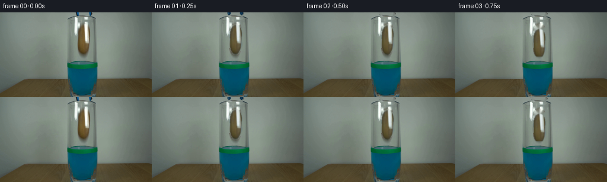
展开代码变化
--- 上一保存版本
+++ 本次保存版本
@@ -69,7 +69,7 @@
cv2.fillPoly(mask, [points.astype(np.int32)], 255)
mask = cv2.GaussianBlur(mask, (3, 3), 0.65)
- x0, y0, x1, y1 = 128, 18, 156, 75
+ x0, y0, x1, y1 = 128, 18, 156, HEIGHT
rgba = np.dstack([source, mask]).astype(np.uint8)
crop = rgba[y0:y1, x0:x1]
scale = 6
候选 03播放与检查图
候选 04播放与检查图
点击播放 · 原生 RGB 像素
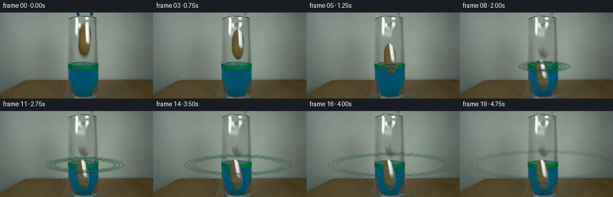
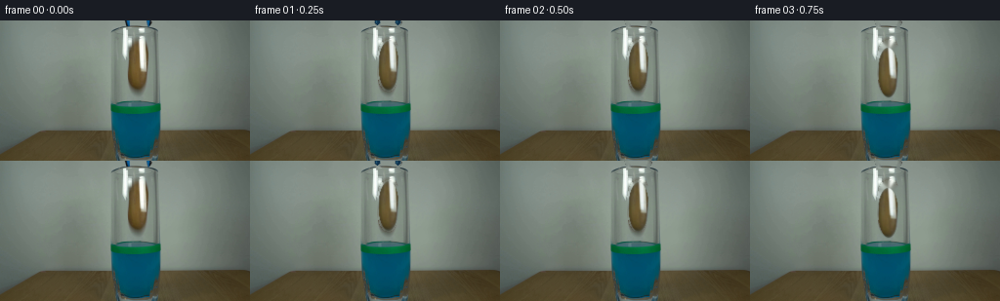
展开代码变化
--- 上一保存版本
+++ 本次保存版本
@@ -56,18 +56,12 @@
def make_potato_sprite(source):
"""Extract the photographed potato with a feathered alpha edge."""
- points = np.array(
- [
- (140, 21), (146, 22), (150, 27), (152, 36), (151, 46),
- (152, 55), (149, 62), (146, 68), (142, 71), (138, 70),
- (134, 65), (132, 57), (132, 48), (131, 39), (133, 29),
- (136, 23),
- ],
- dtype=np.float32,
- )
- mask = np.zeros((HEIGHT, WIDTH), dtype=np.uint8)
- cv2.fillPoly(mask, [points.astype(np.int32)], 255)
- mask = cv2.GaussianBlur(mask, (3, 3), 0.65)
+ yy, xx = np.mgrid[0:HEIGHT, 0:WIDTH]
+ # The potato is a slightly asymmetric oval, centered around (141.5, 46).
+ nx = (xx - 141.5) / 10.5
+ ny = (yy - 46.0) / 25.5
+ distance = nx * nx + ny * ny
+ mask = (255.0 * np.clip((1.045 - distance) / 0.09, 0.0, 1.0)).astype(np.uint8)
x0, y0, x1, y1 = 128, 18, 156, HEIGHT
rgba = np.dstack([source, mask]).astype(np.uint8)
@@ -108,8 +102,8 @@
yy = np.arange(y0, y1, dtype=np.float32)[:, None]
depth = np.clip((yy - WATER_Y + 2.0) / 36.0, 0.0, 1.0)
- blue = np.array([5.0, 72.0, 104.0], dtype=np.float32)
- tint_strength = 0.13 + 0.22 * depth
+ blue = np.array([8.0, 78.0, 107.0], dtype=np.float32)
+ tint_strength = 0.08 + 0.16 * depth
wet = color * (1.0 - tint_strength[:, :, None]) + blue * tint_strength[:, :, None]
# A soft caustic follows the lower half while the potato is in the liquid.
可观测工具轨迹
实际执行的命令与返回图片。
命令 1exit 0
/bin/bash -c 'cat prompt.txt'
命令 2exit 0
/bin/bash -c 'cat GENERATION_RULES.md'
命令 3exit 0
/bin/bash -c "find . -maxdepth 2 -type f -printf '%p %s bytes\\n' | sort"
命令 4exit 0
/bin/bash -c "sed -n '1,240p' artifact_io.py"
命令 5exit 0
/bin/bash -c "sed -n '1,220p' player_template.html"
命令 6exit 0
/bin/bash -c "python3 - <<'PY'
from PIL import Image
im=Image.open('first_frame.png').convert('RGB')
print(im.size)
for p in [(128,20),(128,40),(128,60),(128,80),(128,90),(128,100),(128,120),(118,85),(138,85),(160,80),(100,80),(128,5),(128,140)]: print(p,im.getpixel(p))
PY"命令 7exit 0
/bin/bash -c "python3 - <<'PY'
from PIL import Image
im=Image.open('first_frame.png').convert('RGB')
im.crop((90,0,180,125)).resize((720,1000), Image.Resampling.NEAREST).save('.tmp/crop.png')
PY"命令 8exit 0
/bin/bash -c "python3 - <<'PY'
try:
import cv2; print('cv2', cv2.__version__)
except Exception as e: print('no cv2',e)
try:
import scipy; print('scipy', scipy.__version__)
except Exception as e: print('no scipy',e)
PY"命令 9exit 0
/bin/bash -c "python3 - <<'PY'
from PIL import Image
im=Image.open('first_frame.png').convert('RGB')
# print runs of colors / variance by row around potato
for y in range(8,100,4):
row=[]
for x in range(108,168):
r,g,b=im.getpixel((x,y))
if r>g+10 and g>b+5 and r>70: c='P'
elif b>r+5 and b>g+3 and (b<160): c='B'
elif g>r+20 and g>b+20: c='G'
elif max(r,g,b)-min(r,g,b)<20 and r<210: c='.'
else: c=' '
row.append(c)
print(f'{y:03}', ''.join(row))
PY"命令 10exit 0
/bin/bash -c "python3 - <<'PY'
from PIL import Image
im=Image.open('first_frame.png').convert('RGB')
im.crop((112,0,168,80)).resize((672,960), Image.Resampling.NEAREST).save('.tmp/object.png')
PY"命令 11exit 0
/bin/bash -c "python3 - <<'PY'
from PIL import Image
im=Image.open('first_frame.png').convert('RGB')
for y in range(0,95):
xs=[]
for x in range(100,180):
r,g,b=im.getpixel((x,y))
if b>r+15 and b>g+5 and b>35: xs.append(x)
if xs:
print(y,min(xs),max(xs))
PY"命令 12exit 0
/bin/bash -c "python3 - <<'PY'
from PIL import Image
im=Image.open('first_frame.png').convert('RGB')
for y in [4,8,12,16,20,24,28,32,36,40,44,48,52,56,60,64,68,72,76,80,84,88,92,96]:
vals=[]
for x in range(100,180):
r,g,b=im.getpixel((x,y))
if b>r+10 and b>g+2 and b>50: vals.append(x)
if vals: print(y,min(vals),max(vals))
PY"命令 13exit 0
/bin/bash -c "python3 - <<'PY'
from PIL import Image
im=Image.open('first_frame.png').convert('RGB')
for y in range(0,25):
row=''
for x in range(115,165):
r,g,b=im.getpixel((x,y))
if b>r+30 and b>g+10 and b>60:c='B'
elif b>r+10 and b>g:c='b'
elif r>g+5 and g>b:c='P'
elif r+g+b>680:c='W'
elif abs(r-g)<10 and abs(g-b)<15:c='.'
else:c=' '
row+=c
print(f'{y:02}',row)
PY"命令 14exit 0
/bin/bash -c "python3 - <<'PY'
from PIL import Image
im=Image.open('first_frame.png').convert('RGB')
for y in range(15,75,2):
xs=[]
for x in range(105,170):
r,g,b=im.getpixel((x,y))
if r>g+7 and g>b+4 and r>65 and r<230: xs.append(x)
if xs: print(y,min(xs),max(xs),len(xs))
PY"命令 15exit 1
/bin/bash -c 'python3 generate.py'
命令 16exit 0
/bin/bash -c 'python3 generate.py'
命令 17exit 0
/bin/bash -c "python3 - <<'PY'
from PIL import Image
im=Image.open('frames/14.png').convert('RGB')
im.crop((110,65,170,140)).resize((600,750), Image.Resampling.NEAREST).save('.tmp/f14crop.png')
PY"命令 18exit 0
/bin/bash -c "python3 - <<'PY'
from PIL import Image
im=Image.open('frames/14.png').convert('RGB')
for y in [85,88,90,92,94,96,100,104,108,112,116,120,124,128,132]:
print(y,[im.getpixel((x,y)) for x in [128,132,136,140,144,148,152,156]])
PY"命令 19exit 0
/bin/bash -c "python3 - <<'PY'
import numpy as np
from PIL import Image
import cv2
im=np.array(Image.open('first_frame.png').convert('RGB'))
pts=np.array([(140,21),(146,22),(150,27),(152,36),(151,46),(152,55),(149,62),(146,68),(142,71),(138,70),(134,65),(132,57),(132,48),(131,39),(133,29),(136,23)],np.int32)
mask=np.zeros((144,256),np.uint8);cv2.fillPoly(mask,[pts],255); mask=cv2.GaussianBlur(mask,(3,3),.65)
a=mask[18:75,128:156]/255.
print('alpha',a.min(),a.max(),a[3,10],a[30,10],a[-1,10])
print('rgb', im[30,138:148])
Image.fromarray(mask[18:75,128:156]).resize((280,570)).save('.tmp/mask.png')
PY"命令 20exit 0
/bin/bash -c "python3 - <<'PY'
from PIL import Image
im=Image.open('frames/14.png')
im.crop((100,0,180,144)).resize((640,1152), Image.Resampling.NEAREST).save('.tmp/f14wide.png')
PY"命令 21exit 0
/bin/bash -c "python3 - <<'PY'
import generate
from PIL import Image
import numpy as np
s=np.asarray(Image.open('first_frame.png').convert('RGB'))
base=generate.remove_foreground(s)
sp,box,scale=generate.make_potato_sprite(s)
f=generate.place_sprite(base,sp,box,scale,60,0,7.3,3.5)
Image.fromarray(f).save('.tmp/debugplace.png')
print(f[100,140],f[120,140],base[120,140])
PY"命令 22exit 0
/bin/bash -c "python3 - <<'PY'
import generate
from PIL import Image
import numpy as np, cv2
s=np.asarray(Image.open('first_frame.png').convert('RGB'))
sp,box,scale=generate.make_potato_sprite(s)
big=generate.affine_sprite(sp,7.3,1,(0,60*scale))
small=cv2.resize(big,(28,57),interpolation=cv2.INTER_AREA)
print(small[30,10], small[:,:,3].min(),small[:,:,3].max())
Image.fromarray(small).save('.tmp/sprite_small.png')
PY"命令 23exit 0
/bin/bash -c "python3 - <<'PY'
import generate
from PIL import Image
import numpy as np, cv2
s=np.asarray(Image.open('first_frame.png').convert('RGB'))
sp,box,scale=generate.make_potato_sprite(s)
print(sp.shape, sp[:,:,3].max(),np.count_nonzero(sp[:,:,3]))
big=generate.affine_sprite(sp,0,1,(0,60*scale))
print(big[:,:,3].max(),np.count_nonzero(big[:,:,3]))
Image.fromarray(big[:,:,3]).save('.tmp/alpha.png')
PY"命令 24exit 0
/bin/bash -c "python3 - <<'PY'
import generate
from PIL import Image
import numpy as np, cv2
s=np.asarray(Image.open('first_frame.png').convert('RGB'))
sp,box,scale=generate.make_potato_sprite(s)
m=cv2.getRotationMatrix2D((sp.shape[1]*.5,sp.shape[0]*.5),0,1)
print(m)
out=cv2.warpAffine(sp,m,(sp.shape[1],sp.shape[0]),flags=cv2.INTER_LINEAR,borderMode=cv2.BORDER_CONSTANT,borderValue=(0,0,0,0))
print(out[:,:,3].max(), out.dtype, out.shape)
PY"命令 25exit 0
/bin/bash -c "python3 - <<'PY'
import generate
from PIL import Image
import numpy as np
s=np.asarray(Image.open('first_frame.png').convert('RGB'))
sp,box,scale=generate.make_potato_sprite(s)
b=generate.affine_sprite(sp,0,1,(0,60*scale))
print(b[:,:,3].max())
b=generate.affine_sprite(sp,0,1,(0,0))
print(b[:,:,3].max())
PY"命令 26exit 0
/bin/bash -c 'python3 generate.py'
命令 27exit 0
/bin/bash -c 'python3 generate.py'
命令 28exit 0
/bin/bash -c "python3 - <<'PY'
from PIL import Image
import numpy as np
ref=np.array(Image.open('first_frame.png').convert('RGB'))
out=np.array(Image.open('frames/00.png').convert('RGB'))
print('first_frame_identical', np.array_equal(ref,out), 'maxdiff', np.abs(ref.astype(int)-out.astype(int)).max())
PY"命令 29exit 0
/bin/bash -c 'git status --short 2>/dev/null || true'
命令 30exit 0
/bin/bash -c "python3 - <<'PY'
import numpy as np
from PIL import Image
from pathlib import Path
files=sorted(Path('frames').glob('*.png'))
print('frames',len(files), 'sizes', sorted(set(Image.open(f).size for f in files)))
for f in files:
a=np.array(Image.open(f))
assert a.shape==(144,256,3) and a.dtype==np.uint8
print('all RGB uint8 144x256')
print('pixels.npz',Path('pixels.npz').stat().st_size,'index.html',Path('index.html').stat().st_size)
PY"命令 31exit 0
/bin/bash -c "python3 - <<'PY'
import numpy as np
from PIL import Image
for i in [0,1,2,3,4,5,6,7,8,9,10,11,12,13,14,15,16,17,18,19]:
a=np.array(Image.open(f'frames/{i:02d}.png'))
print(i, float(a.mean()), int(a.std()))
PY"命令 32exit 0
/bin/bash -c "python3 - <<'PY'
from PIL import Image
import numpy as np
for idx in [2,4,6,8,10,14,19]:
im=Image.open(f'frames/{idx:02d}.png').convert('RGB')
im.crop((112,12,172,144)).resize((360,792), Image.Resampling.NEAREST).save(f'.tmp/seq{idx:02d}.png')
PY"视觉工具实际返回图片 1
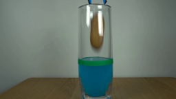
视觉工具实际返回图片 2
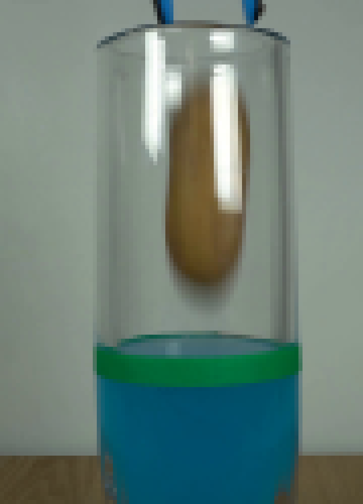
视觉工具实际返回图片 3
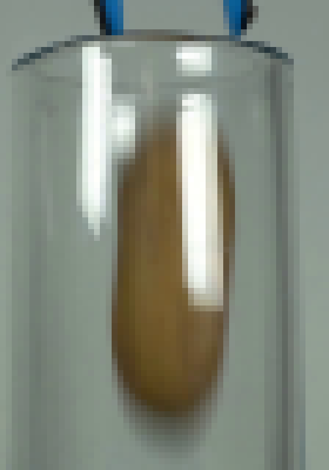
视觉工具实际返回图片 4
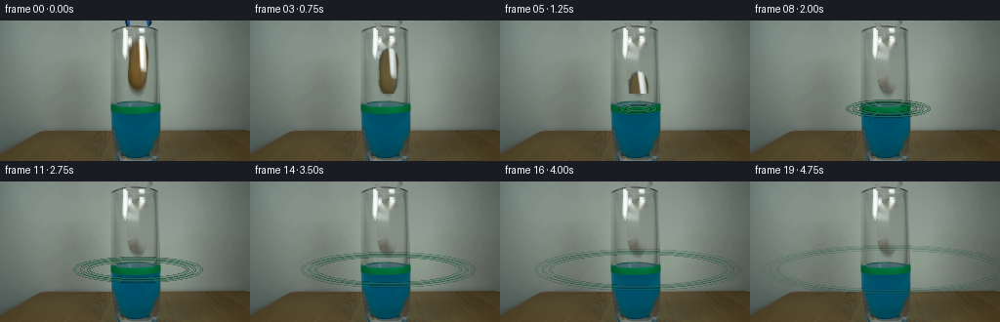
视觉工具实际返回图片 5
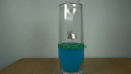
视觉工具实际返回图片 6
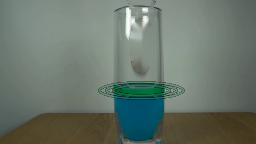
视觉工具实际返回图片 7
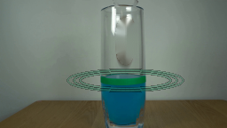
视觉工具实际返回图片 8
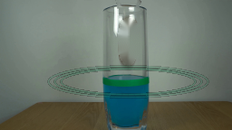
视觉工具实际返回图片 9
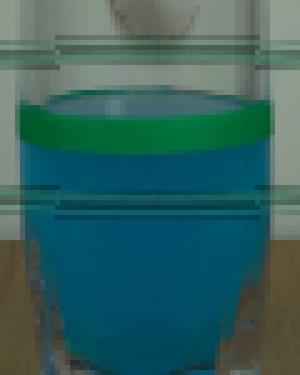
视觉工具实际返回图片 10
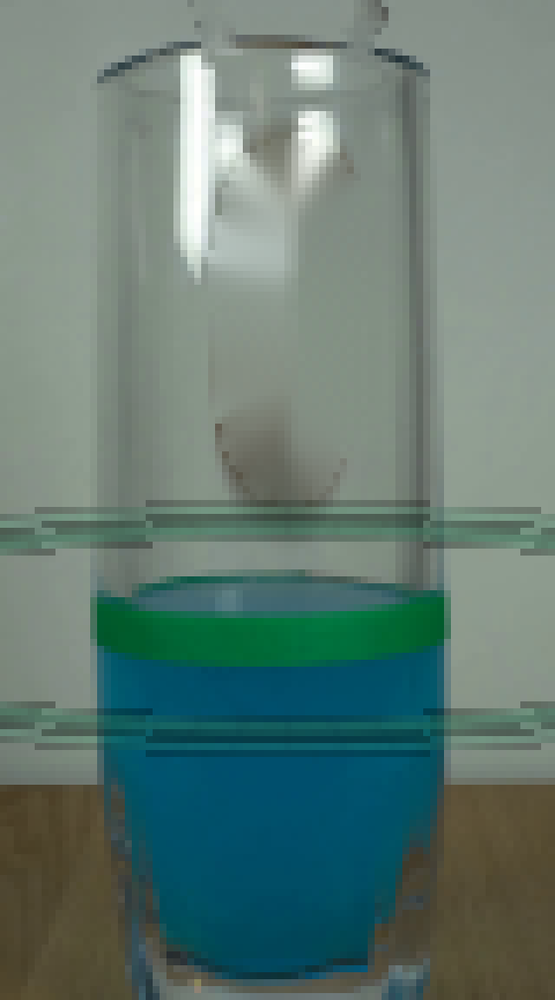
视觉工具实际返回图片 11

视觉工具实际返回图片 12

视觉工具实际返回图片 13

视觉工具实际返回图片 14
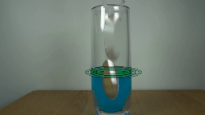
视觉工具实际返回图片 15
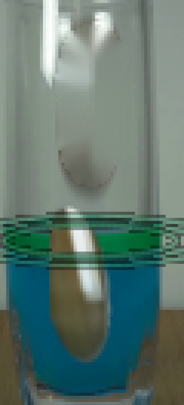
视觉工具实际返回图片 16
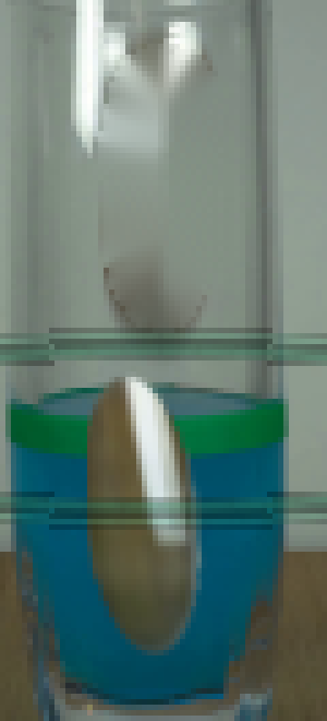
保存候选 4 份；完成命令 32 次；可验证图片返回 16 张。原始 API 响应与完整日志保留在本地。